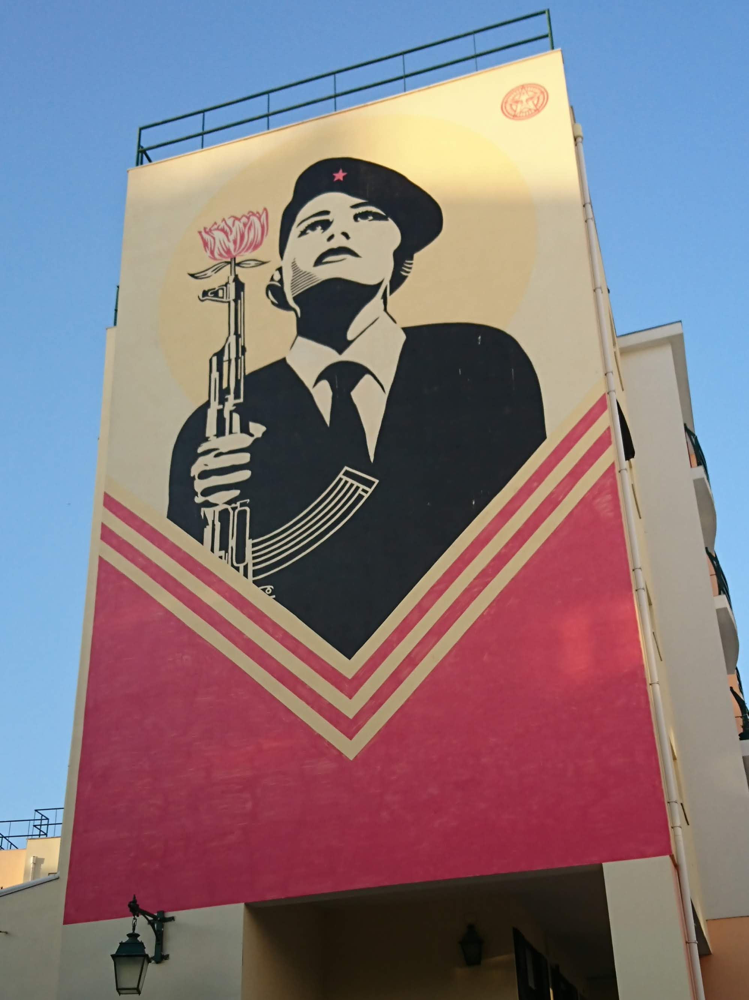

<!DOCTYPE html><html>
<head><title>Leaflet Essentials</title>
  <meta name="viewport" content="width=device-width, initialscale=1.0, maximum-scale=1.0, user-scalable=no">
  <link rel="stylesheet" href="https://unpkg.com/leaflet@1.6.0/dist/leaflet.css" integrity="sha512-xwE/Az9zrjBIphAcBb3F6JVqxf46+CDLwfLMHloNu6KEQCAWi6HcDUbeOfBIptF7tcCzusKFjFw2yuvEpDL9wQ==" crossorigin="">
  <style>
    body{
      padding: 0;
      margin: 0;
    }
    html, body, #map {
      height: 100%;
    }
  </style>
</head>
<body>
  <script src="https://unpkg.com/leaflet@1.6.0/dist/leaflet.js" integrity="sha512-gZwIG9x3wUXg2hdXF6+rVkLF/0Vi9U8D2Ntg4Ga5I5BZpVkVxlJWbSQtXPSiUTtC0TjtGOmxa1AJPuV0CPthew==" crossorigin=""></script>
<div id="mymap" style="width: 600px; height: 400px"></div>

<script>
  var mymap = L.map('mymap').setView([38.7, -9.14], 13);


  L.tileLayer('http://{s}.tile.osm.org/{z}/{x}/{y}.png', {
    attribution: 'Map data &copy; <a href="https://www.openstreetmap.org/">OpenStreetMap</a> contributors, <a href="https://creativecommons.org/licenses/by-sa/2.0/">CC-BY-SA</a>, Imagery © <a href="https://www.mapbox.com/">Mapbox</a>'
}).addTo(mymap);

  var marker1=L.marker([38.7208884, -9.1295], {title:"La rivoluzione dei garofani"}).bindPopup("<h1>La rivoluzione dei garofani</h1><p>Murales a tema storico</p><ul><li>Foto di: Melissa Ferretti</li><li>Data foto: Settembre 2019</li></ul>");

  var marker2=L.marker([38.719185, -9.133418],  {title:"Fernando Pessoa"}).bindPopup("Fernando Pessoa");

  var myLayerGroup=L.layerGroup([marker1, marker2]).addTo(mymap);

  //mymap.on('click', function(){alert("You clicked the map");});

  mymap.on('click',function(e){
    var coord=e.latlng.toString().split(',');
    var lat=coord[0].split('(');
    var long=coord[1].split(')');
    alert("you clicked the map at LAT: "+ lat[1]+" and LONG:"+long[0])
  });


  L.marker(e.latlng).addTo(mymap);

  //var marker1 = L.marker([38.7208884, -9.1295], {title:"La rivoluzione dei garofani"}).addTo(mymap);
  //marker1.bindPopup("I am a Marker");

</script>

</body>
</html>
